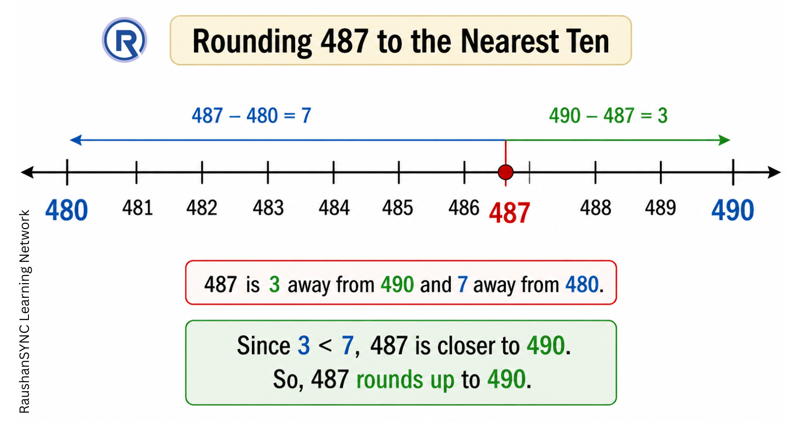
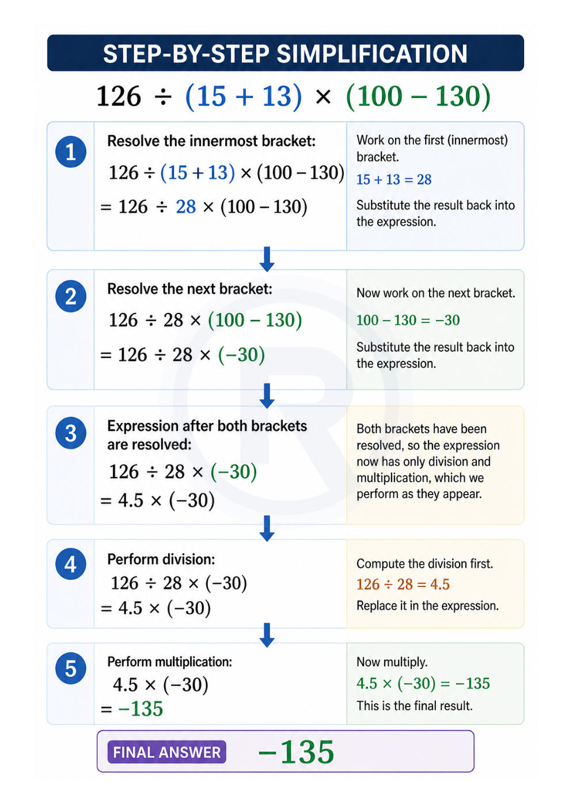

Part 3: Estimation, Use of Brackets, and Roman Numerals
Class 6 · Chapter 1 · Patterns in Mathematics
1. Big Picture Overview
Mathematics is not always about exact answers. Sometimes you need a quick, reasonable approximation — when shopping, planning, or making a fast decision. This ability is called estimation, and it depends on a skill called rounding.
Separately, this section introduces two things that might seem unconnected at first: the use of brackets in arithmetic, and Roman numerals. Both are really about clarity and convention — how mathematics communicates meaning without ambiguity.
These three ideas — estimation, brackets, and Roman numerals — represent three different dimensions of mathematical literacy: approximation, order of operations, and historical numeration.
2. Core Concepts
Concept 1 — Rounding and Estimation
a. Intuitive Explanation
Suppose you are told that a journey takes 487 kilometres. You tell a friend, "It's about 500 km." You have rounded the number. You haven't lied — you've given an approximation that is close enough to be useful for most practical purposes.
Rounding is the process of replacing a number with a nearby "round" number (typically a multiple of 10, 100, or 1000) that is easier to work with.
b. Formal Idea
Rounding to the nearest ten:
Look at the digit in the ones place.
- If it is 0, 1, 2, 3, or 4 — the number is closer to the lower ten. Round down (keep the tens digit the same, replace the ones digit with 0).
- If it is 5, 6, 7, 8, or 9 — the number is closer to the upper ten. Round up (increase the tens digit by 1, replace the ones digit with 0).
Rounding to the nearest hundred:
Look at the digit in the tens place and apply the same logic — 0–4 rounds down, 5–9 rounds up.
Rounding to the nearest thousand:
Look at the digit in the hundreds place — same rule applies.
c. Deep Explanation
Why 5 as the threshold? Because 5 is exactly halfway between 0 and 10. A number ending in 5 is equidistant between the lower and upper ten. The convention is to round up in such cases — this is a human agreement, not a mathematical law. The point is consistency: everyone uses the same rule so results are predictable.
Estimation in operations:
When estimating the result of an addition, subtraction, multiplication, or division, you first round the numbers involved, then perform the operation on the rounded values. The result is an approximate answer — useful for checking whether your exact answer is in the right range.
For example: estimating 3945 + 3042 by rounding both to the nearest thousand gives 4000 + 3000 = 7000. The actual answer is 6987. The estimate is close — close enough to confirm you haven't made a large error in calculation.
Why estimation matters: In real life, calculators and computers are widely used for exact computation. But estimation is a distinctly human skill — it tells you whether an answer is reasonable before you commit to it. A good estimator can detect errors quickly.

d. Common Misconceptions
Misconception: "Estimating means giving a random guess."
Why it feels correct: The word "estimate" is sometimes used loosely in conversation to mean any rough guess.
Why it is incorrect: Mathematical estimation follows specific rules (rounding) and produces a result that is provably close to the actual value within a bounded range.
Common Mistake: "When rounding 8512 to the nearest thousand, I might look at the tens or ones digit and decide the answer is 8000."
Why this is incorrect: To round to the nearest thousand, you must look at the hundreds digit, not the tens or ones. In 8512, the hundreds digit is 5, which tells us to round up.
Correct thinking: When rounding to a specific place value, always look at the digit one place to the right of your target place. Since the hundreds digit is 5, we round the thousands digit (8) up to 9.
Final Answer: 8512 rounds to 9000.
e. Conceptual Connections
Estimation is practically useful in real-life problems involving distances, costs, and quantities — as illustrated through the day-to-day examples in this chapter, such as calculating distances between places or estimating the cost of items.
Concept 2 — Use of Brackets
a. Intuitive Explanation
Consider this: 5 + 3 × 2. Does this mean "add 5 and 3 first, then multiply by 2" (giving 16)? Or "multiply 3 by 2 first, then add 5" (giving 11)?
Without a rule, this expression is genuinely ambiguous. Brackets solve this problem by explicitly indicating which operation should be performed first.
b. Formal Idea
A bracket groups together an operation that must be performed first. When simplifying an expression with brackets, you always evaluate the expression inside the brackets first, reduce it to a single number, and then continue with the remaining operations.
c. Deep Explanation
Brackets are a communication tool. They remove ambiguity from mathematical expressions. Without them, the same string of symbols could mean different things to different people — which would make mathematics unreliable.
When multiple operations are nested (brackets within brackets), you work from the innermost brackets outward — because the innermost group must be resolved first before the outer group can make sense.
The deeper principle: Brackets represent the idea that some part of an expression has been "packaged" — sealed off as a single unit. Until the bracket is opened and resolved, that package behaves as one number.
This is also why brackets are so important in word problems: translating a sentence like "the product of two numbers added to their sum" requires correctly bracketing the intended operations.

d. Common Misconceptions
Misconception: "I can solve the operations in any order as long as I get a number at the end."
Why it is incorrect: Different orders of operation produce different results. 126 ÷ (15 + 13) is not the same as (126 ÷ 15) + 13. The bracket explicitly specifies which operation forms a unit, and that specification must be respected.
Misconception: "Brackets are only needed in complicated problems. Simple expressions don't need them."
Why it is incorrect: Even simple expressions become ambiguous without clarity about order. Brackets make intent explicit — and explicit communication is the foundation of reliable mathematics.
e. Conceptual Connections
The concept of brackets becomes increasingly important as students encounter algebra, where expressions involve multiple terms and the order of operations is critical. The habit of respecting brackets now prepares the ground for that later work.
Concept 3 — Roman Numerals
a. Intuitive Explanation
Long before the decimal place-value system was developed, civilisations needed ways to record numbers. The Romans developed a numeration system that is still visible today — on clock faces, in the chapter numbering of books, in film copyright years, and in the names of monarchs (King Henry VIII, for instance).
Roman numerals are not just historical curiosities. They represent a completely different approach to number — one that uses symbols with fixed values rather than positions with variable values.
b. Formal Idea
The Roman numeral system uses seven fundamental symbols:
| Symbol | I | V | X | L | C | D | M |
|---|---|---|---|---|---|---|---|
| Value | 1 | 5 | 10 | 50 | 100 | 500 | 1000 |
Numbers are formed by combining these symbols under specific rules. Generally, symbols are added together when written in sequence from largest to smallest. But when a symbol of smaller value appears immediately before a symbol of larger value, it is subtracted instead of added.
c. Deep Explanation
The additive principle:
When symbols go from larger to smaller (left to right), their values are added.
XII = 10 + 1 + 1 = 12
CCC = 100 + 100 + 100 = 300
The subtractive principle:
When a smaller symbol immediately precedes a larger one, the smaller is subtracted.
IV = 5 − 1 = 4
IX = 10 − 1 = 9
XC = 100 − 10 = 90
CM = 1000 − 100 = 900
This subtractive convention was introduced to avoid writing four identical symbols in a row. Instead of IIII for 4, Romans wrote IV. This keeps numbers more compact.
Constraints on the subtractive rule:
- Only I can be placed before V or X (giving IV = 4 and IX = 9)
- Only X can be placed before L or C (giving XL = 40 and XC = 90)
- Only C can be placed before D or M (giving CD = 400 and CM = 900)
No zero, no positional value:
This is the most profound difference from our decimal system. Roman numerals have no zero, and no digit changes value based on position. V always means 5, regardless of where it appears. This makes the system simpler conceptually but far less powerful computationally — Roman numerals cannot be easily used for large-number arithmetic, which is why the decimal system eventually replaced them for most purposes.
d. Common Misconceptions
Misconception: "Any smaller symbol in front of a larger symbol means subtraction."
Why it is incorrect: Only specific combinations are valid. You cannot write IC for 99 (I before C is not a standard convention) — the correct form is XCIX. The subtractive rule follows a fixed set of permitted pairs.
Misconception: "Roman numerals are just a decorative way of writing numbers — they follow the same logic as our system."
Why it is incorrect: Roman numerals follow additive and subtractive logic, with no place value whatsoever. This is a fundamentally different architecture from the decimal positional system. Recognising this distinction deepens your understanding of why our own number system is such a powerful invention.
Misconception: "A symbol can be repeated as many times as needed."
Why it is incorrect: No symbol may be repeated more than three times in succession. This is a fundamental rule of the system, which is why the subtractive notation was introduced for values like 4 and 9.
e. Conceptual Connections
Studying Roman numerals after learning the decimal place-value system allows you to appreciate the decimal system by contrast. The limitations of Roman numerals — no zero, no positional value, difficult arithmetic — highlight why place value was such a transformative idea in the history of mathematics.
3. Important Distinctions
| Feature | Decimal System | Roman Numeral System |
|---|---|---|
| Positional? | Yes — digit value depends on position | No — symbol value is fixed |
| Has zero? | Yes | No |
| Good for arithmetic? | Yes — addition, multiplication work smoothly | Difficult for computation |
| Symbol reuse | Digits 0–9 used at any position | Limited repetition (max 3 times) |
| Subtraction rule? | Not applicable | Yes — specific pairs only |
4. Concept Checkpoints
- If you round 4,500 to the nearest thousand, do you get 4,000 or 5,000? What does your answer reveal about the rule for exactly halfway values?
- The expression 198 × (42 + 58) equals a specific value. Without computing it, can you see why 198 × 100 is a shortcut here? What is the bracket doing for you?
- In Roman numerals, why can you not simply write IIIIX for 6? What rule prevents this, and what is the correct way to write it?
- Why do you think Roman numerals are still used in certain contexts (like clock faces and book chapters) even though the decimal system is more powerful? What quality of Roman numerals makes them suitable for those uses?
5. Chapter-Level Mental Model (for this section)
Estimation, brackets, and Roman numerals are three expressions of a single underlying mathematical value: precision with intent.
Estimation means being precise about how approximate your answer is. Brackets mean being precise about which operations are grouped. Roman numerals reveal, by contrast, how precise our own number system is when it comes to representing and computing with large numbers.
Together, these concepts build a learner who does not just calculate — but who communicates clearly, checks results intelligently, and understands that mathematical notation is a designed language, not an accident.
Continue to Part 4:
▶ Whole Numbers